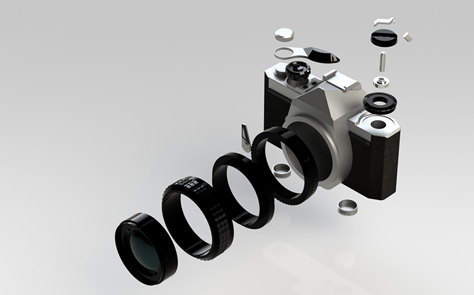
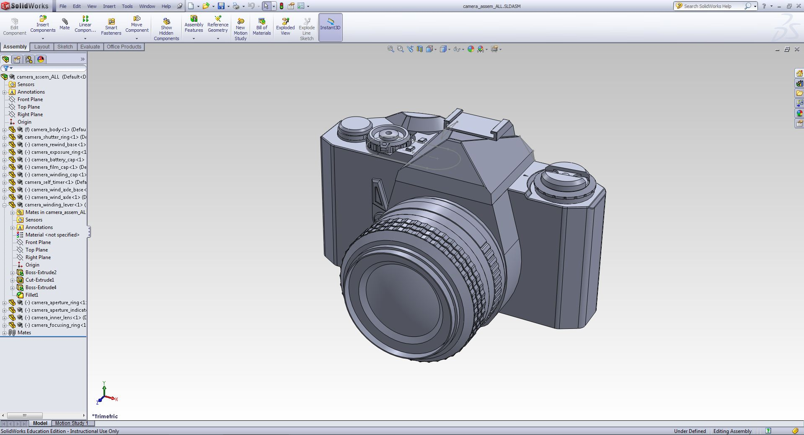
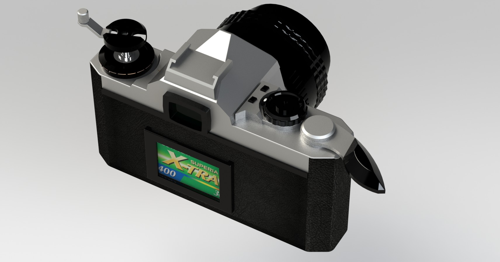
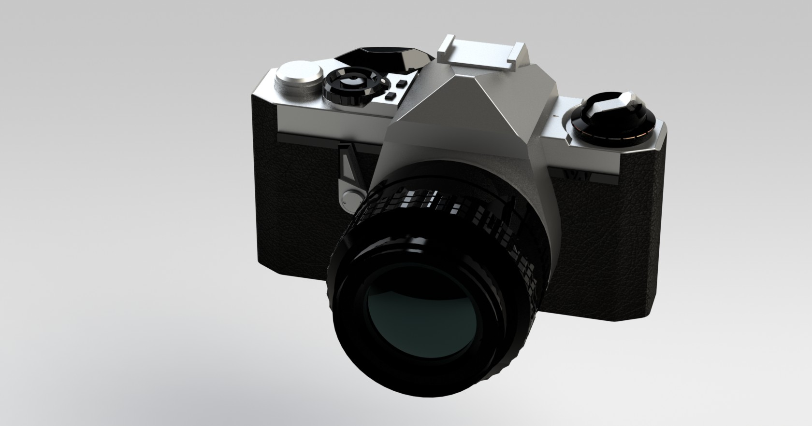
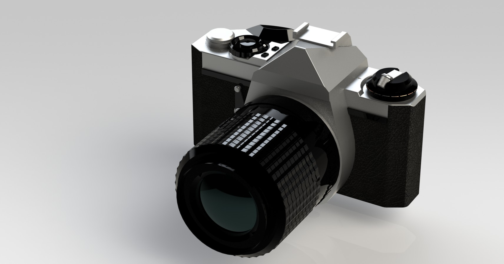
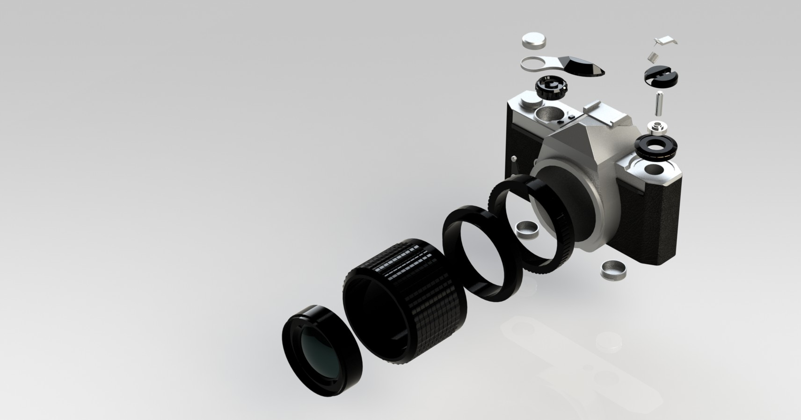

3D Modeling - Film Camera
- Solidworks / Industrial 3D Modeling -
TYPE
- Industrial Modeling
- Academic Project
- Individual Work
ROLE
- Industrial Sketches
- Dimensioning
- 3D modeling
- Lighting
- Rendering
TOOLS
- Solidworks 2011
- Photoview 360
- Hand Sketch
TIME
- March 2013
- within 2 weeks
Description
Building digital models with four different configurations by applying scale‐based and/or module‐based product family design. Modifying or refining the models for making them suitable for parametric and configuration changes.
Modeling Process

At first, I drew the industrial sketches of 6 views precisely. Then I measured the dimensions of my Pentax Me-Super and label them on the sketch.
Then, I used Solidworks to build parts of the model and assemble them together to a completed assembly.

Finally, I select the right material for texture. I adjusted light to prevent over-exposure and under-exposure. Then I made a exploded view and did final render in Photoview 360 for each configuration.
Final Renders
-

- 
- 
-

-

- 
- 
-

-

-

-